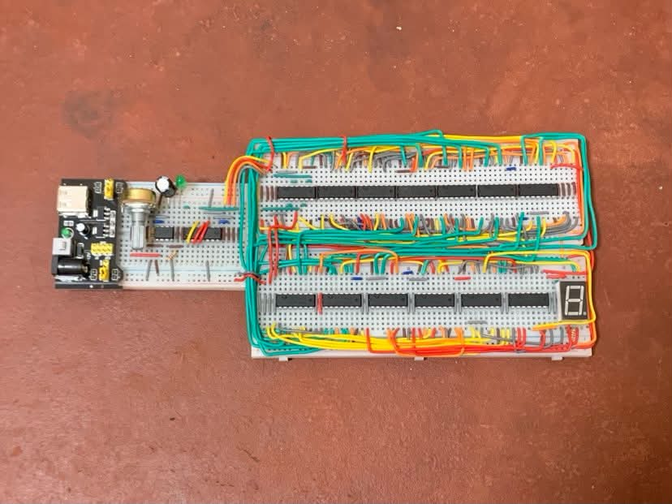
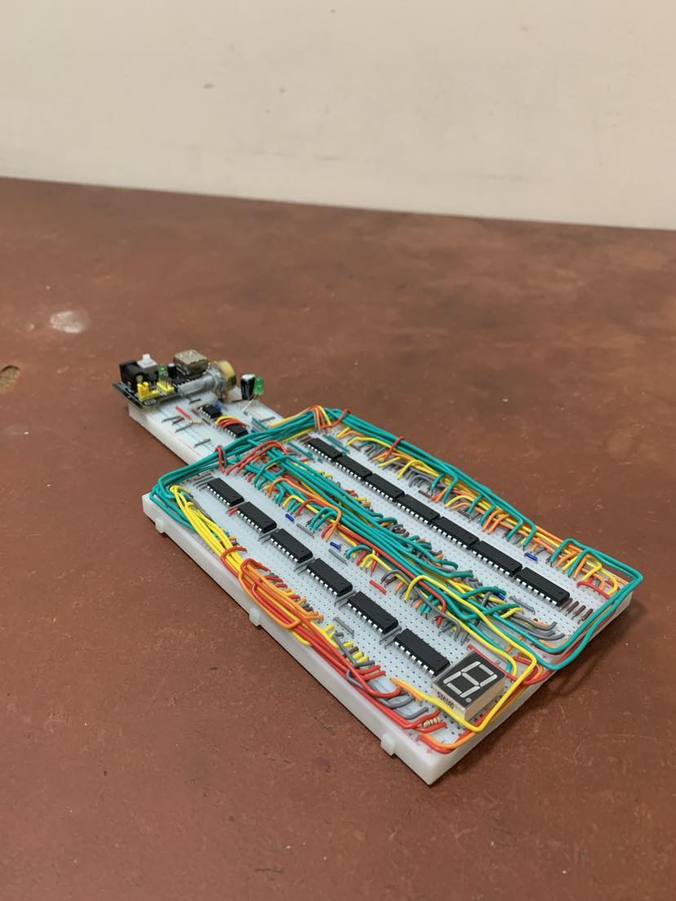

Hardware Project
A simple digital clock using OR gates ICs.
This project is a 15-second digital clock built using only 74LS32 OR gate ICs, demonstrating how complex digital logic can be implemented using a single type of logic gate. The circuit counts from 0 to F (hexadecimal) on a single 7-segment display, representing 16 states that correspond to approximately 15 seconds of elapsed time. What makes this project interesting is the optimization of the logic to use the fewest OR gate ICs possible, requiring careful Boolean simplification and circuit planning.
Overview
The clock is designed using Boolean logic derived through logical calculations and implemented exclusively with 74LS32 OR gate ICs. A clock pulse advances the counter through 16 states (0 to F), while the output logic drives a single 7-segment display to show the current count. Before building the physical circuit, the design was planned, verified, and tested in Tinkercad to ensure the logic functioned correctly.
One of the biggest challenges was implementing all required logic using only OR gates while minimizing the total number of ICs. This required simplifying Boolean expressions and optimizing the circuit layout without sacrificing functionality. If improved further, the design could be made more compact or extended to support longer timing intervals using additional optimized logic stages.
Build time
2 weeks
Integrated Circuit
74LS32
Category
Logic Gates Design
Status
Completed
Build Photos


See It In Action
Watch the 15-second digital clock count from 0 to F on a single 7-segment display using only OR gate ICs
Details
74LS32 Quad 2-Input OR Gate IC
Primary logic gate used to implement the entire circuit using optimized Boolean expressions.
7-Segment Display
Displays the hexadecimal count from 0 to F, representing the 16 counting states.
555 Timer IC
Used as a clock source to generate the timing pulses for the counter.
74HC93 4-bit Counter IC
Functions as a divide-by-16 counter, counting from 0 to 15 in binary.
Potentiometer
Used to adjust the timing of the 555 Timer IC.
Breadboard & Jumper Wires
Used for prototyping and connecting the various components of the circuit.
Tinkercad
Used to design, simulate, and validate the circuit before physical implementation.